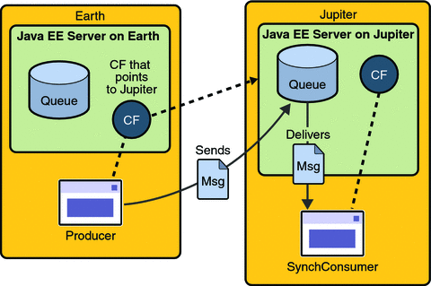

Writing Simple JMS Client Applications
This section shows how to create, package, and run simple JMS client programs packaged as stand-alone application clients. These clients access a Java EE server. The clients demonstrate the basic tasks that a JMS application must perform:
Creating a connection and a session
Creating message producers and consumers
Sending and receiving messages
In a Java EE application, some of these tasks are performed, in whole or in part, by the container. If you learn about these tasks, you will have a good basis for understanding how a JMS application works on the Java EE platform.
This section covers the following topics:
Each example uses two programs: one that sends messages and one that receives them. You can run the programs in NetBeans IDE or in two terminal windows.
When you write a JMS application to run in a Java EE application, you use many of the same methods in much the same sequence as you do for a stand-alone application client. However, there are some significant differences. Using the JMS API in a Java EE Application describes these differences, and Chapter 32, Java EE Examples Using the JMS API provides examples that illustrate them.
The examples for this section are in the following directory:
tut-install/javaeetutorial5/examples/jms/simple/
The examples are in the following four subdirectories:
producer synchconsumer asynchconsumer messagebrowser
A Simple Example of Synchronous Message Receives
This section describes the sending and receiving programs in an example that uses the receive method to consume messages synchronously. This section then explains how to compile, package, and run the programs using the Application Server.
The following sections describe the steps in creating and running the example:
Writing the Client Programs for the Synchronous Receive Example
Creating JMS Administered Objects for the Synchronous Receive Example
Compiling and Packaging the Clients for the Synchronous Receive Example
Writing the Client Programs for the Synchronous Receive Example
The sending program, producer/src/java/Producer.java, performs the following steps:
Injects resources for a connection factory, queue, and topic:
@Resource(mappedName="jms/ConnectionFactory") private static ConnectionFactory connectionFactory; @Resource(mappedName="jms/Queue")private static Queue queue; @Resource(mappedName="jms/Topic")private static Topic topic;
Retrieves and verifies command-line arguments that specify the destination type and the number of arguments:
final int NUM_MSGS; String destType = args[0]; System.out.println("Destination type is " + destType); if ( ! ( destType.equals("queue") || destType.equals("topic") ) ) { System.err.println("Argument must be \”queue\” or " + "\”topic\”"); System.exit(1); } if (args.length == 2){ NUM_MSGS = (new Integer(args[1])).intValue(); } else { NUM_MSGS = 1; }Assigns either the queue or topic to a destination object, based on the specified destination type:
Destination dest = null; try { if (destType.equals("queue")) { dest = (Destination) queue; } else { dest = (Destination) topic; } } catch (Exception e) { System.err.println("Error setting destination: " + e.toString()); e.printStackTrace(); System.exit(1); }Creates a Connection and a Session:
Connection connection = connectionFactory.createConnection(); Session session = connection.createSession(false, Session.AUTO_ACKNOWLEDGE);
Creates a MessageProducer and a TextMessage:
MessageProducer producer = session.createProducer(dest); TextMessage message = session.createTextMessage();
Sends one or more messages to the destination:
for (int i = 0; i < NUM_MSGS; i++) { message.setText("This is message " + (i + 1)); System.out.println("Sending message: " + message.getText()); producer.send(message); }Sends an empty control message to indicate the end of the message stream:
producer.send(session.createMessage());
Sending an empty message of no specified type is a convenient way to indicate to the consumer that the final message has arrived.
Closes the connection in a finally block, automatically closing the session and MessageProducer:
} finally { if (connection != null) { try { connection.close(); } catch (JMSException e) { } } }
The receiving program, synchconsumer/src/java/SynchConsumer.java, performs the following steps:
Injects resources for a connection factory, queue, and topic.
Assigns either the queue or topic to a destination object, based on the specified destination type.
Creates a Connection and a Session.
Creates a MessageConsumer:
consumer = session.createConsumer(dest);
Starts the connection, causing message delivery to begin:
connection.start();
Receives the messages sent to the destination until the end-of-message-stream control message is received:
while (true) { Message m = consumer.receive(1); if (m != null) { if (m instanceof TextMessage) { message = (TextMessage) m; System.out.println("Reading message: " + message.getText()); } else { break; } } }Because the control message is not a TextMessage, the receiving program terminates the while loop and stops receiving messages after the control message arrives.
Closes the connection in a finally block, automatically closing the session and MessageConsumer.
The receive method can be used in several ways to perform a synchronous receive. If you specify no arguments or an argument of 0, the method blocks indefinitely until a message arrives:
Message m = consumer.receive(); Message m = consumer.receive(0);
For a simple client program, this may not matter. But if you do not want your program to consume system resources unnecessarily, use a timed synchronous receive. Do one of the following:
Call the receive method with a timeout argument greater than 0:
Message m = consumer.receive(1); // 1 millisecond
Call the receiveNoWait method, which receives a message only if one is available:
Message m = consumer.receiveNoWait();
The SynchConsumer program uses an indefinite while loop to receive messages, calling receive with a timeout argument. Calling receiveNoWait would have the same effect.
Starting the JMS Provider
When you use the Application Server, your JMS provider is the Application Server. Start the server as described in Starting and Stopping the Application Server.
Creating JMS Administered Objects for the Synchronous Receive Example
Creating the JMS administered objects for this section involves the following:
Creating a connection factory
Creating two destination resources
If you built and ran the SimpleMessage example in Chapter 23, A Message-Driven Bean Example and did not delete the resources afterward, you need to create only the topic resource.
You can create these objects using the Ant tool. To create all the resources, do the following:
In a terminal window, go to the producer directory:
cd producer
To create all the resources, type the following command:
ant create-resources
To create only the topic resource, type the following command:
ant create-topic
These Ant targets use the asadmin create-jms-resource command to create the connection factory and the destination resources.
To verify that the resources have been created, use the following command:
asadmin list-jms-resources
The output looks like this:
jms/Queue jms/Topic jms/ConnectionFactory Command list-jms-resources executed successfully.
Compiling and Packaging the Clients for the Synchronous Receive Example
The simplest way to run these examples using the Application Server is to package each one in an application client JAR file. The application client JAR file requires a manifest file, located in the src/conf directory for each example, along with the .class file.
The build.xml file for each example contains Ant targets that compile and package the example. The targets place the .class file for the example in the build/jar directory. Then the targets use the jar command to package the class file and the manifest file in an application client JAR file.
To compile and package the Producer and SynchConsumer examples using NetBeans IDE, follow these steps:
In NetBeans IDE, choose Open Project from the File menu.
In the Open Project dialog, navigate to tut-install/javaeetutorial5/examples/jms/simple/.
Select the producer folder.
Select the Open as Main Project check box.
Click Open Project.
Right-click the project and choose Build.
In NetBeans IDE, choose Open Project from the File menu.
In the Open Project dialog, navigate to tut-install/javaeetutorial5/examples/jms/simple/.
Select the synchconsumer folder.
Select the Open as Main Project check box.
Click Open Project.
Right-click the project and choose Build.
To compile and package the Producer and SynchConsumer examples using Ant, follow these steps:
In a terminal window, go to the producer directory:
cd producer
Type the following command:
ant
In a terminal window, go to the synchconsumer directory:
cd ../synchconsumer
Type the following command:
ant
The targets place the application client JAR file in the dist directory for each example.
Running the Clients for the Synchronous Receive Example
To run the sample programs using NetBeans IDE, follow these steps.
Run the Producer example:
Right-click the producer project and choose Properties.
Select Run from the Categories tree.
In the Arguments field, type the following:
queue 3
Click OK.
Right-click the project and choose Run.
The output of the program looks like this:
Destination type is queue Sending message: This is message 1 Sending message: This is message 2 Sending message: This is message 3
The messages are now in the queue, waiting to be received.
Now run the SynchConsumer example:
Right-click the synchconsumer project and choose Properties.
Select Run from the Categories tree.
In the Arguments field, type the following:
queue
Click OK.
Right-click the project and choose Run.
The output of the program looks like this:
Destination type is queue Reading message: This is message 1 Reading message: This is message 2 Reading message: This is message 3
Now try running the programs in the opposite order. Right-click the synchconsumer project and choose Run.
The Output pane displays the destination type and then appears to hang, waiting for messages.
Right-click the producer project and choose Run.
The Output pane shows the output of both programs, in two different tabs.
Now run the Producer example using a topic instead of a queue.
Right-click the producer project and choose Properties.
Select Run from the Categories tree.
In the Arguments field, type the following:
topic 3
Click OK.
Right-click the project and choose Run.
The output of the program looks like this:
Destination type is topic Sending message: This is message 1 Sending message: This is message 2 Sending message: This is message 3
Now run the SynchConsumer example using the topic.
Right-click the synchconsumer project and choose Properties.
Select Run from the Categories tree.
In the Arguments field, type the following:
topic
Click OK.
Right-click the project and choose Run.
The result, however, is different. Because you are using a topic, messages that were sent before you started the consumer cannot be received. (See Publish/Subscribe Messaging Domain, for details.) Instead of receiving the messages, the program appears to hang.
Run the Producer example again. Right-click the producer project and choose Run.
Now the SynchConsumer example receives the messages:
Destination type is topic Reading message: This is message 1 Reading message: This is message 2 Reading message: This is message 3
You can also run the sample programs using the appclient command. Each of the programs takes one or more command-line arguments: a destination type and, for Producer, a number of messages.
To run the clients using the appclient command, follow these steps:
In a terminal window, go to the producer/dist directory:
cd ../producer/dist
Run the Producer program, sending three messages to the queue:
appclient -client producer.jar queue 3
The output of the program looks like this:
Destination type is queue Sending message: This is message 1 Sending message: This is message 2 Sending message: This is message 3
The messages are now in the queue, waiting to be received.
In the same window, go to the synchconsumer/dist directory:
cd ../../synchconsumer/dist
Run the SynchConsumer program, specifying the queue:
appclient -client synchconsumer.jar queue
The output of the program looks like this:
Destination type is queue Reading message: This is message 1 Reading message: This is message 2 Reading message: This is message 3
Now try running the programs in the opposite order. Run the SynchConsumer program. It displays the destination type and then appears to hang, waiting for messages.
appclient -client synchconsumer.jar queue
In a different terminal window, run the Producer program.
cd tut-install/javaeetutorial5/examples/jms/simple/producer/dist appclient -client producer.jar queue 3
When the messages have been sent, the SynchConsumer program receives them and exits.
Now run the Producer program using a topic instead of a queue:
appclient -client producer.jar topic 3
The output of the program looks like this:
Destination type is topic Sending message: This is message 1 Sending message: This is message 2 Sending message: This is message 3
Now run the SynchConsumer program using the topic:
appclient -client synchconsumer.jar topic
The result, however, is different. Because you are using a topic, messages that were sent before you started the consumer cannot be received. (See Publish/Subscribe Messaging Domain, for details.) Instead of receiving the messages, the program appears to hang.
Run the Producer program again. Now the SynchConsumer program receives the messages:
Destination type is topic Reading message: This is message 1 Reading message: This is message 2 Reading message: This is message 3
Because the examples use the common interfaces, you can run them using either a queue or a topic.
A Simple Example of Asynchronous Message Consumption
This section describes the receiving programs in an example that uses a message listener to consume messages asynchronously. This section then explains how to compile and run the programs using the Application Server.
The following sections describe the steps in creating and running the example:
Writing the Client Programs for the Asynchronous Receive Example
The sending program is producer/src/java/Producer.java, the same program used in the example in A Simple Example of Synchronous Message Receives.
An asynchronous consumer normally runs indefinitely. This one runs until the user types the letter q or Q to stop the program.
The receiving program, asynchconsumer/src/java/AsynchConsumer.java, performs the following steps:
Injects resources for a connection factory, queue, and topic.
Assigns either the queue or topic to a destination object, based on the specified destination type.
Creates a Connection and a Session.
Creates a MessageConsumer.
Creates an instance of the TextListener class and registers it as the message listener for the MessageConsumer:
listener = new TextListener();consumer.setMessageListener(listener);
Starts the connection, causing message delivery to begin.
Listens for the messages published to the destination, stopping when the user types the character q or Q:
System.out.println("To end program, type Q or q, " + "then <return>"); inputStreamReader = new InputStreamReader(System.in); while (!((answer == ’q’) || (answer == ’Q’))) { try { answer = (char) inputStreamReader.read(); } catch (IOException e) { System.out.println("I/O exception: " + e.toString()); } }Closes the connection, which automatically closes the session and MessageConsumer.
The message listener, asynchconsumer/src/java/TextListener.java, follows these steps:
When a message arrives, the onMessage method is called automatically.
The onMessage method converts the incoming message to a TextMessage and displays its content. If the message is not a text message, it reports this fact:
public void onMessage(Message message) { TextMessage msg = null; try { if (message instanceof TextMessage) { msg = (TextMessage) message; System.out.println("Reading message: " + msg.getText()); } else { System.out.println("Message is not a " + "TextMessage"); } } catch (JMSException e) { System.out.println("JMSException in onMessage(): " + e.toString()); } catch (Throwable t) { System.out.println("Exception in onMessage():" + t.getMessage()); } }
You will use the connection factory and destinations you created in Creating JMS Administered Objects for the Synchronous Receive Example.
Compiling and Packaging the AsynchConsumer Client
To compile and package the AsynchConsumer example using NetBeans IDE, follow these steps:
In NetBeans IDE, choose Open Project from the File menu.
In the Open Project dialog, navigate to tut-install/javaeetutorial5/examples/jms/simple/.
Select the asynchconsumer folder.
Select the Open as Main Project check box.
Click Open Project.
Right-click the project and choose Build.
To compile and package the AsynchConsumer example using Ant, follow these steps:
In a terminal window, go to the asynchconsumer directory:
cd ../../asynchconsumer
Type the following command:
ant
The targets package both the main class and the message listener class in the JAR file and place the file in the dist directory for the example.
Running the Clients for the Asynchronous Receive Example
To run the programs using NetBeans IDE, follow these steps.
Run the AsynchConsumer example:
Right-click the asynchconsumer project and choose Properties.
Select Run from the Categories tree.
In the Arguments field, type the following:
topic
Click OK.
Right-click the project and choose Run.
The program displays the following lines and appears to hang:
Destination type is topic To end program, type Q or q, then <return>
Now run the Producer example:
Right-click the producer project and choose Properties.
Select Run from the Categories tree.
In the Arguments field, type the following:
topic 3
Click OK.
Right-click the project and choose Run.
The output of the program looks like this:
Destination type is topic Sending message: This is message 1 Sending message: This is message 2 Sending message: This is message 3
In the other window, the AsynchConsumer program displays the following:
Destination type is topic To end program, type Q or q, then <return> Reading message: This is message 1 Reading message: This is message 2 Reading message: This is message 3 Message is not a TextMessage
The last line appears because the program has received the non-text control message sent by the Producer program.
Type Q or q in the Output window and press Return to stop the program.
Now run the programs using a queue. In this case, as with the synchronous example, you can run the Producer program first, because there is no timing dependency between the sender and receiver.
Right-click the producer project and choose Properties.
Select Run from the Categories tree.
In the Arguments field, type the following:
queue 3
Click OK.
Right-click the project and choose Run.
The output of the program looks like this:
Destination type is queue Sending message: This is message 1 Sending message: This is message 2 Sending message: This is message 3
Run the AsynchConsumer program.
Right-click the asynchconsumer project and choose Properties.
Select Run from the Categories tree.
In the Arguments field, type the following:
queue
Click OK.
Right-click the project and choose Run.
The output of the program looks like this:
Destination type is queue To end program, type Q or q, then <return> Reading message: This is message 1 Reading message: This is message 2 Reading message: This is message 3 Message is not a TextMessage
Type Q or q in the Output window and press Return to stop the program.
To run the clients using the appclient command, follow these steps:
Run the AsynchConsumer program, specifying the topic destination type.
cd dist appclient -client asynchconsumer.jar topic
The program displays the following lines and appears to hang:
Destination type is topic To end program, type Q or q, then <return>
In the terminal window where you ran the Producer program previously, run the program again, sending three messages. The command looks like this:
appclient -client producer.jar topic 3
The output of the program looks like this:
Destination type is topic Sending message: This is message 1 Sending message: This is message 2 Sending message: This is message 3
In the other window, the AsynchConsumer program displays the following:
Destination type is topic To end program, type Q or q, then <return> Reading message: This is message 1 Reading message: This is message 2 Reading message: This is message 3 Message is not a TextMessage
The last line appears because the program has received the non-text control message sent by the Producer program.
Type Q or q and press Return to stop the program.
Now run the programs using a queue. In this case, as with the synchronous example, you can run the Producer program first, because there is no timing dependency between the sender and receiver:
appclient -client producer.jar queue 3
The output of the program looks like this:
Destination type is queue Sending message: This is message 1 Sending message: This is message 2 Sending message: This is message 3
Run the AsynchConsumer program:
appclient -client asynchconsumer.jar queue
The output of the program looks like this:
Destination type is queue To end program, type Q or q, then <return> Reading message: This is message 1 Reading message: This is message 2 Reading message: This is message 3 Message is not a TextMessage
Type Q or q to stop the program.
A Simple Example of Browsing Messages in a Queue
This section describes an example that creates a QueueBrowser object to examine messages on a queue, as described in JMS Queue Browsers. This section then explains how to compile, package, and run the example using the Application Server.
The following sections describe the steps in creating and running the example:
Writing the Client Program for the Queue Browser Example
To create a QueueBrowser for a queue, you call the Session.createBrowser method with the queue as the argument. You obtain the messages in the queue as an Enumeration object. You can then iterate through the Enumeration object and display the contents of each message.
The messagebrowser/src/java/MessageBrowser.java program performs the following steps:
Injects resources for a connection factory and a queue.
Creates a Connection and a Session.
Creates a QueueBrowser:
QueueBrowser browser = session.createBrowser(queue);
Retrieves the Enumeration that contains the messages:
Enumeration msgs = browser.getEnumeration();
Verifies that the Enumeration contains messages, then displays the contents of the messages:
if ( !msgs.hasMoreElements() ) { System.out.println("No messages in queue"); } else { while (msgs.hasMoreElements()) { Message tempMsg = (Message)msgs.nextElement(); System.out.println("Message: " + tempMsg); } }Closes the connection, which automatically closes the session and QueueBrowser.
The format in which the message contents appear is implementation-specific. In the Application Server, the message format looks like this:
Message contents: Text: This is message 3 Class: com.sun.messaging.jmq.jmsclient.TextMessageImpl getJMSMessageID(): ID:14-129.148.71.199(f9:86:a2:d5:46:9b)-40814-1129061034355 getJMSTimestamp(): 1129061034355 getJMSCorrelationID(): null JMSReplyTo: null JMSDestination: PhysicalQueue getJMSDeliveryMode(): PERSISTENT getJMSRedelivered(): false getJMSType(): null getJMSExpiration(): 0 getJMSPriority(): 4 Properties: null
You will use the connection factory and queue you created in Creating JMS Administered Objects for the Synchronous Receive Example.
Compiling and Packaging the MessageBrowser Client
To compile and package the MessageBrowser example using NetBeans IDE, follow these steps:
In NetBeans IDE, choose Open Project from the File menu.
In the Open Project dialog, navigate to tut-install/javaeetutorial5/examples/jms/simple/.
Select the messagebrowser folder.
Select the Open as Main Project check box.
Click Open Project.
Right-click the project and choose Build.
To compile and package the MessageBrowser example using Ant, follow these steps:
In a terminal window, go to the messagebrowser directory. If you are currently in the asynchconsumer/dist directory, you need to go up two levels:
cd ../../messagebrowser
Type the following command:
ant
The targets place the application client JAR file in the dist directory for the example.
You also need the Producer example to send the message to the queue, and one of the consumer programs to consume the messages after you inspect them. If you did not do so already, package these examples.
Running the Clients for the Queue Browser Example
To run the programs using NetBeans IDE, follow these steps.
Run the Producer program, sending one message to the queue:
Right-click the producer project and choose Properties.
Select Run from the Categories tree.
In the Arguments field, type the following:
queue
Click OK.
Right-click the project and choose Run.
The output of the program looks like this:
Destination type is queue Sending message: This is message 1
Run the MessageBrowser program. Right-click the messagebrowser project and choose Run.
The output of the program looks like this:
Message: Text: This is message 1 Class: com.sun.messaging.jmq.jmsclient.TextMessageImpl getJMSMessageID(): ID:12-129.148.71.199(8c:34:4a:1a:1b:b8)-40883-1129062957611 getJMSTimestamp(): 1129062957611 getJMSCorrelationID(): null JMSReplyTo: null JMSDestination: PhysicalQueue getJMSDeliveryMode(): PERSISTENT getJMSRedelivered(): false getJMSType(): null getJMSExpiration(): 0 getJMSPriority(): 4 Properties: null Message: Class: com.sun.messaging.jmq.jmsclient.MessageImpl getJMSMessageID(): ID:13-129.148.71.199(8c:34:4a:1a:1b:b8)-40883-1129062957616 getJMSTimestamp(): 1129062957616 getJMSCorrelationID(): null JMSReplyTo: null JMSDestination: PhysicalQueue getJMSDeliveryMode(): PERSISTENT getJMSRedelivered(): false getJMSType(): null getJMSExpiration(): 0 getJMSPriority(): 4 Properties: null
The first message is the TextMessage, and the second is the non-text control message.
Run the SynchConsumer program to consume the messages.
Right-click the synchconsumer project and choose Properties.
Select Run from the Categories tree.
In the Arguments field, type the following:
queue
Click OK.
Right-click the project and choose Run.
The output of the program looks like this:
Destination type is queue Reading message: This is message 1
To run the clients using the appclient command, follow these steps. You may want to use two terminal windows.
Go to the producer/dist directory.
Run the Producer program, sending one message to the queue:
appclient -client producer.jar queue
The output of the program looks like this:
Destination type is queue Sending message: This is message 1
Go to the messagebrowser/dist directory.
Run the MessageBrowser program:
appclient -client messagebrowser.jar
The output of the program looks like this:
Message: Text: This is message 1 Class: com.sun.messaging.jmq.jmsclient.TextMessageImpl getJMSMessageID(): ID:12-129.148.71.199(8c:34:4a:1a:1b:b8)-40883-1129062957611 getJMSTimestamp(): 1129062957611 getJMSCorrelationID(): null JMSReplyTo: null JMSDestination: PhysicalQueue getJMSDeliveryMode(): PERSISTENT getJMSRedelivered(): false getJMSType(): null getJMSExpiration(): 0 getJMSPriority(): 4 Properties: null Message: Class: com.sun.messaging.jmq.jmsclient.MessageImpl getJMSMessageID(): ID:13-129.148.71.199(8c:34:4a:1a:1b:b8)-40883-1129062957616 getJMSTimestamp(): 1129062957616 getJMSCorrelationID(): null JMSReplyTo: null JMSDestination: PhysicalQueue getJMSDeliveryMode(): PERSISTENT getJMSRedelivered(): false getJMSType(): null getJMSExpiration(): 0 getJMSPriority(): 4 Properties: null
The first message is the TextMessage, and the second is the non-text control message.
Go to the synchconsumer/dist directory.
Run the SynchConsumer program to consume the messages:
appclient -client synchconsumer.jar queue
The output of the program looks like this:
Destination type is queue Reading message: This is message 1
Running JMS Client Programs on Multiple Systems
JMS client programs using the Application Server can exchange messages with each other when they are running on different systems in a network. The systems must be visible to each other by name (the UNIX host name or the Microsoft Windows computer name) and must both be running the Application Server. You do not have to install the tutorial examples on both systems; you can use the examples installed on one system if you can access its file system from the other system.
Note - Any mechanism for exchanging messages between systems is specific to the Java EE server implementation. This tutorial describes how to use the Application Server for this purpose.
Suppose that you want to run the Producer program on one system, earth, and the SynchConsumer program on another system, jupiter. Before you can do so, you need to perform these tasks:
Create two new connection factories
Edit the source code for the two examples
Recompile and repackage the examples
Note - A limitation in the JMS provider in the Application Server may cause a runtime failure to create a connection to systems that use the Dynamic Host Configuration Protocol (DHCP) to obtain an IP address. You can, however, create a connection from a system that uses DHCP to a system that does not use DHCP. In the examples in this tutorial, earth can be a system that uses DHCP, and jupiter can be a system that does not use DHCP.
Before you begin, start the server on both systems:
Start the Application Server on earth.
Start the Application Server on jupiter.
Creating Administered Objects for Multiple Systems
To run these programs, you must do the following:
Create a new connection factory on both earth and jupiter
Create a destination resource on both earth and jupiter
You do not have to install the tutorial on both systems, but you must be able to access the filesystem where it is installed. You may find it more convenient to install the tutorial on both systems if the two systems use different operating systems (for example, Windows and Solaris). Otherwise you will have to edit the file tut-install/javaeetutorial5/examples/bp-project/build.properties and change the location of the javaee.home property each time you build or run a program on a different system.
To create a new connection factory on jupiter, perform these steps:
From a command shell on jupiter, go to the directory tut-install/javaeetutorial5/examples/jms/simple/producer/.
Type the following command:
ant create-local-factory
The create-local-factory target, defined in the build.xml file for the Producer example, creates a connection factory named jms/JupiterConnectionFactory.
To create a new connection factory on earth that points to the connection factory on jupiter, perform these steps:
From a command shell on earth, go to the directory tut-install/javaeetutorial5/examples/jms/simple/producer/.
Type the following command:
ant create-remote-factory -Dsys=remote-system-name
Replace remote-system-name with the actual name of the remote system.
The create-remote-factory target, defined in the build.xml file for the Producer example, also creates a connection factory named jms/JupiterConnectionFactory. In addition, it sets the AddressList property for this factory to the name of the remote system.
If you have already been working on either earth or jupiter, you have the queue and topic on one system. On the system that does not have the queue and topic, type the following command:
ant create-resources
When you run the programs, they will work as shown in Figure 31-6. The program run on earth needs the queue on earth only in order that the resource injection will succeed. The connection, session, and message producer are all created on jupiter using the connection factory that points to jupiter. The messages sent from earth will be received on jupiter.
Figure 31-6 Sending Messages from One System to Another
Editing, Recompiling, Repackaging, and Running the Programs
These steps assume that you have the tutorial installed on only one of the two systems you are using and that you are able to access the file system of jupiter from earth or vice versa.
After you create the connection factories, edit the source files to specify the new connection factory. Then recompile, repackage, and run the programs. Perform the following steps:
Open the following file in a text editor:
tut-installjavaeetutorial5/examples/jms/simple/producer/src/java/Producer.java
Find the following line:
@Resource(mappedName="jms/ConnectionFactory")
Change the line to the following:
@Resource(mappedName="jms/JupiterConnectionFactory")
Recompile and repackage the Producer example on earth.
If you are using NetBeans IDE, right-click the producer project and choose Clean and Build.
If you are using Ant, type the following:
ant
Open the following file in a text editor:
tut-installjavaeetutorial5/examples/jms/simple/synchconsumer/src/java/SynchConsumer.java
Repeat steps 2 and 3.
Recompile and repackage the SynchConsumer example on jupiter.
If you are using NetBeans IDE, right-click the synchconsumer project and choose Clean and Build.
If you are using Ant, go to the synchconsumer directory and type:
ant
On earth, run Producer. If you are using NetBeans IDE on earth, perform these steps:
Right-click the producer project and choose Properties.
Select Run from the Categories tree.
In the Arguments field, type the following:
queue 3
Click OK.
Right-click the project and choose Run.
If you are using the appclient command, go to the producer/dist directory and type the following:
appclient -client producer.jar queue 3
On jupiter, run SynchConsumer. If you are using NetBeans IDE on jupiter, perform these steps:
Right-click the synchconsumer project and choose Properties.
Select Run from the Categories tree.
In the Arguments field, type the following:
queue
Click OK.
Right-click the project and choose Run.
If you are using the appclient command, go to the synchconsumer/dist directory and type the following:
appclient -client synchconsumer.jar queue
For examples showing how to deploy Java EE applications on two different systems, see An Application Example That Consumes Messages from a Remote Server and An Application Example That Deploys a Message-Driven Bean on Two Servers.
Deleting the Connection Factory and Stopping the Server
You will need the connection factory jms/JupiterConnectionFactory in Chapter 32, Java EE Examples Using the JMS API. However, if you wish to delete it, go to the producer directory and type the following command:
ant delete-remote-factory
Remember to delete the connection factory on both systems.
You can also use Ant targets in the producer/build.xml file to delete the destinations and connection factories you created in Creating JMS Administered Objects for the Synchronous Receive Example. However, it is recommended that you keep them, because they will be used in most of the examples in Chapter 32, Java EE Examples Using the JMS API. After you have created them, they will be available whenever you restart the Application Server.
To delete the class and JAR files for each program using NetBeans IDE, right-click each project and choose Clean.
To delete the class and JAR files for each program using Ant, type the following:
ant clean
You can also stop the Application Server, but you will need it to run the sample programs in the next section.